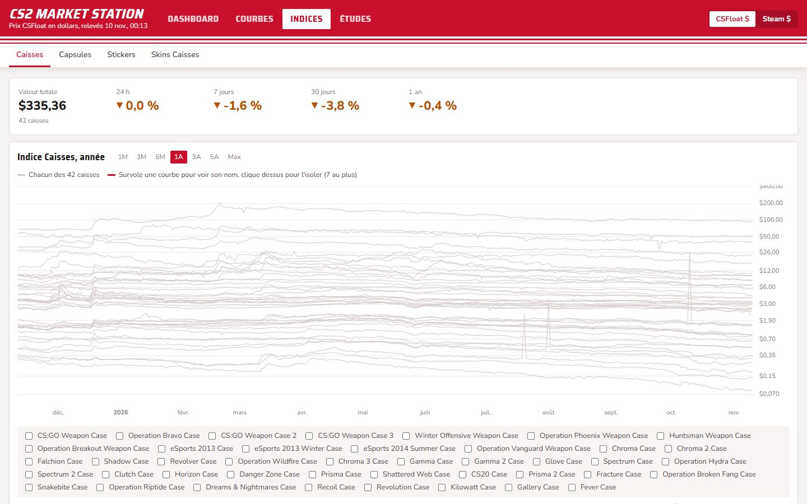
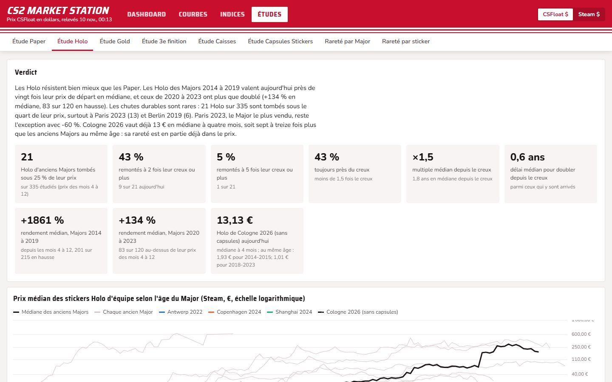

Counter-Strike 2 · tableau de borddashboard
CS2 Market Station
Un tableau de bord du marché des objets de Counter-Strike 2 : 113 produits suivis (caisses, capsules et stickers des Majors), avec les prix CSFloat et Steam, jusqu'à cinq ans d'historique et une mise à jour chaque nuit. A market dashboard for Counter-Strike 2 items: 113 tracked products (cases, Major capsules and stickers), CSFloat and Steam prices, up to five years of history, refreshed every night.



Le besoinThe need
Suivre un marché d'objets virtuels dont les prix bougent chaque jour, sur deux places de marché qui n'ont ni les mêmes frais ni le même historique, sans passer chaque soir d'une page à l'autre.Follow a virtual item market whose prices move every day, across two marketplaces with different fees and histories, without jumping between pages every evening.
Ce que j'ai construitWhat I built
- Dashboard : quatre indices de marché et leur variation sur 24 heures, 7 et 30 jours.Dashboard: four market indices and their 24-hour, 7-day and 30-day change.
- Courbes : plus haut, plus bas, ventes par jour et plus basse annonce pour chaque objet, sur un horizon allant de la journée à toute sa durée de vie.Charts: high, low, daily sales and lowest listing for each item, from one day to its whole lifetime.
- Indices : caisses, capsules, stickers et skins, recalculés chaque nuit.Indices: cases, capsules, stickers and skins, recomputed every night.
- Études : huit analyses qui comparent les objets d'un Major à ceux des autres au même âge.Studies: eight analyses comparing each Major's items with the others at the same age.
Comment ça marcheHow it works
CollecterCollect
Chaque nuit, une routine dans le cloud lance un script Python qui relève l'historique des ventes Steam et les prix CSFloat.Every night, a cloud routine runs a Python script that pulls Steam sales history and CSFloat prices.
PréparerPrepare
Les séries sont fusionnées et converties en dollars ; pour les études, les pics de manipulation sont retirés.Series are merged and converted to dollars; for the studies, manipulation spikes are removed.
AfficherDisplay
Une page web unique lit ces données et trace les courbes ; produits et onglets s'ajoutent depuis la page.A single web page reads the data and draws the charts; products and tabs are added from the page itself.
La démo est une copie figée du 10/11/2026, avec les mêmes données et les mêmes onglets. Mon portefeuille personnel et la méta-analyse restent privés.The demo is a frozen copy from 10 Nov 2026, with the same data and tabs. My personal holdings and the meta-analysis stay private.